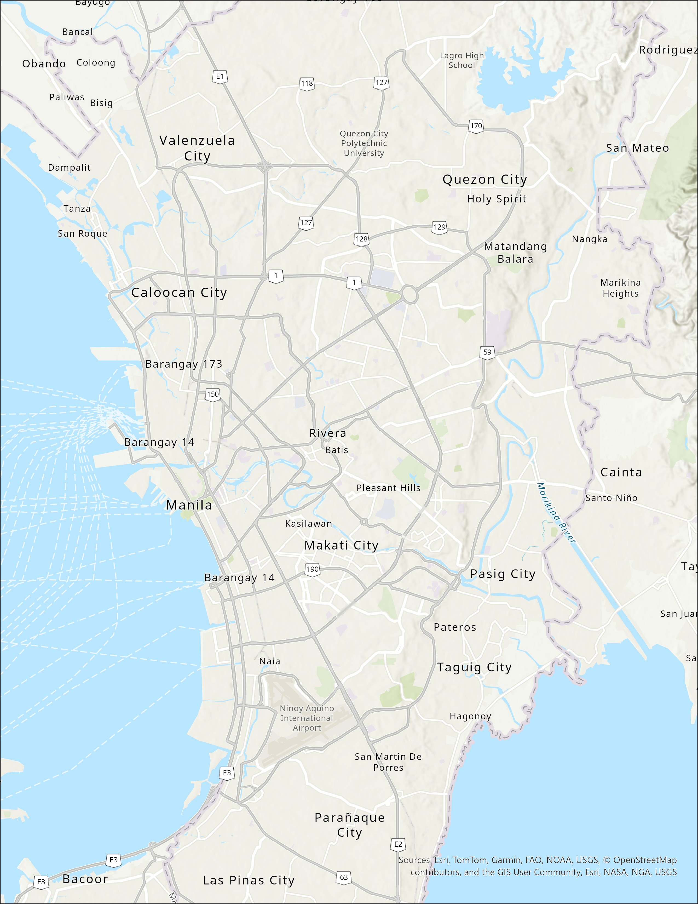

1. Base geography
This frame defines the Metro Manila study area within which user-testing suitability is assessed. It establishes the spatial relationship between central Manila, western coastal districts, northern extensions, and eastern corridors so that later claims about density, access, and competitor activity can be interpreted as part of one connected urban system rather than as isolated neighborhood observations.
- The study area spans the core Metro Manila corridor where housing demand, access, and competitor activity can be compared within one connected urban system.
- The frame sets the geographic boundaries for evaluating candidate user-testing sites.
- All later accessibility and market signals are meaningful because they are located within this shared metro context.